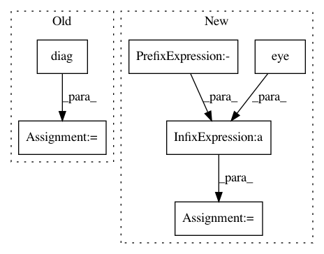

9af9ab51cee0c212ba1c689ae047558889464bc2,test/likelihoods/test_general_multitask_gaussian_likelihood.py,TestMultiTaskGPRegression,test_multitask_low_rank_noise_covar,#TestMultiTaskGPRegression#,56
Before Change
likelihood.eval()
task_corr = _eval_corr_matrix(likelihood.task_noise_corr_factor, likelihood.task_noise_corr_diag)
noise_diag = likelihood.noise_covar.log_noise.squeeze().diag().exp().sqrt()
task_noise_covar = noise_diag.matmul(task_corr).matmul(noise_diag)
self.assertGreater(task_noise_covar[0, 0, 1].item(), 0.05)
After Change
num_tasks = 2
task_noise_covar_factor = likelihood.task_noise_covar_factor
noise = likelihood.noise
task_noise_covar = task_noise_covar_factor.matmul(
task_noise_covar_factor.transpose(-1, -2)
) + noise * torch.eye(num_tasks)
self.assertGreater(task_noise_covar[0, 0, 1].item(), 0.05)
In pattern: SUPERPATTERN
Frequency: 3
Non-data size: 6
Instances
Project Name: cornellius-gp/gpytorch
Commit Name: 9af9ab51cee0c212ba1c689ae047558889464bc2
Time: 2018-11-22
Author: balandat@fb.com
File Name: test/likelihoods/test_general_multitask_gaussian_likelihood.py
Class Name: TestMultiTaskGPRegression
Method Name: test_multitask_low_rank_noise_covar
Project Name: uber/pyro
Commit Name: d7148f390db12a3f7e4b43ab584648b2e4a1882d
Time: 2020-11-07
Author: fritz.obermeyer@gmail.com
File Name: pyro/distributions/spanning_tree.py
Class Name: SpanningTree
Method Name: log_partition_function
Project Name: cornellius-gp/gpytorch
Commit Name: 979b8c9efa551e8c948a4aca145367a2d87ac8d6
Time: 2019-02-26
Author: balandat@fb.com
File Name: test/distributions/test_multitask_multivariate_normal.py
Class Name: TestMultiTaskMultivariateNormal
Method Name: test_multivariate_normal_batch_correlated_sampels